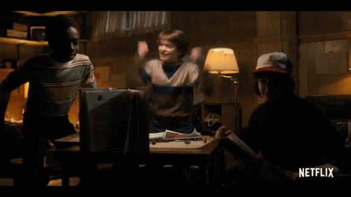

Tudo acontece em Hawkins. Até bagulhos sinistros!
Tudo acontece em Hawkins. Até bagulhos sinistros!
1ª temporada
Sinopse
A 1ª temporada de Stranger Things foi lançada mundialmente em 15 de julho de 2016, trazendo em seus espisódios muitas aventuras, suspense e principalemente mistérios a serem descobertos naquela cidade parada e segura até então.
Hawkins, Indiana. 1983. Um garoto de 12 anos desaparece misteriosamente. A família e a polícia procuram respostas, mas acabam se deparando com um experimento secreto do governo. Enquanto isso, os amigos do menino iniciam suas próprias investigações, o que os levam a um extraordinário mistério envolvendo forças sobrenaturais e uma garotinha muito, muito estranha.
Em novembro de 1983, em Hawkins, Indiana , um cientista é atacado por uma criatura invisível em um laboratório do governo dos Estados Unidos . Will Byers, de 12 anos, encontra a criatura e desaparece misteriosamente enquanto volta de bicicleta para casa após uma sessão de Dungeons & Dragons com seus amigos Mike Wheeler , Dustin Henderson e Lucas Sinclair. A mãe solteira de Will, Joyce Byers, relata seu desaparecimento ao chefe de polícia Jim Hopper, que inicia uma busca e garante a Joyce que quase todas as crianças desaparecidas serão rapidamente encontradas.

O diretor do laboratório, Dr. Martin Brenner, investiga uma substância orgânica escorrendo do porão do laboratório, alegando que "a garota" não pode ter ido longe. Uma jovem nervosa, vestindo uma bata de hospital, entra em uma lanchonete local. O proprietário, Benny, descobre por uma tatuagem de "011" em seu braço que seu nome é Eleven . Brenner, monitorando as linhas telefônicas, envia agentes para a lanchonete depois que Benny liga para o serviço social. Os agentes matam Benny, mas Eleven consegue escapar usando habilidades telecinéticas . O telefone de Joyce entra em curto-circuito depois que ela recebe um telefonema misterioso que ela acredita ser de Will.
Enquanto procurava por Will na floresta, Mike, e seus amigos encontram com uma garotinha muito estranha e assustada, e é daí onde a história começa a ficar emocionante para todos daquela pacata cidezinha.